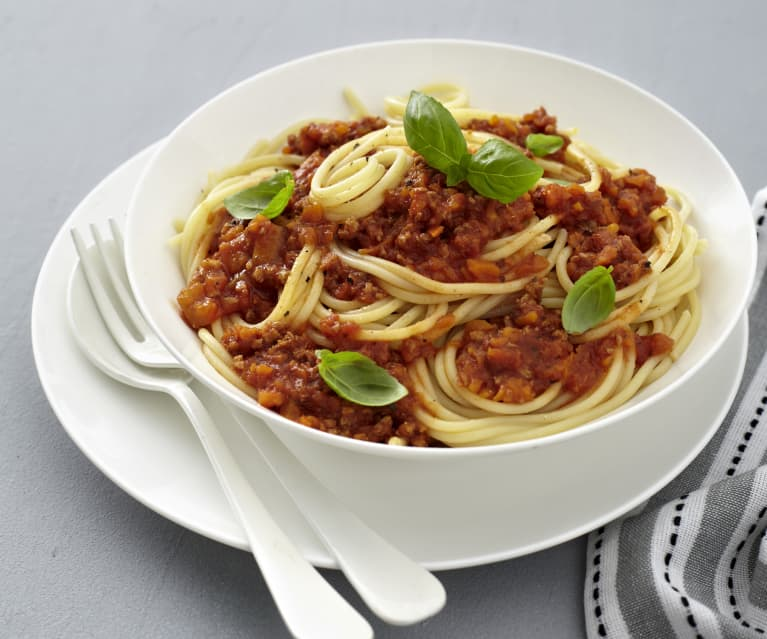

Bolognese Sauce

This Vegan Bolognese Sauce is the perfect Italian-inspired sauce to eat atop your favorite noodles.
And because this recipe is vegan, compared to regular Bolognese sauce, it takes a fraction of the time to make.
Ingredients
- 125 g Soy Granules
- 2 tbsp olive oil
- 1 onion
- 1 carrot
- ½ celery roots
- 3 cloves garlic
- 1 tsp paprika spices
- 1 tsp dry oregano spices
- 125 ml cup vegan red wine
- 10 g cacao powder
- 1 tbsp maple syrup
- 1 can diced tomato
- 1 cup tomato paste
- 1 cup water
- Salt & black pepper to taste
Direction
- Hydrate the soy protein in boiling water. The water should easily cover it, you need to get a tender “minced meat”, add as much water as you need. You can always use a colander to get rid of extra water.
- In a large pot, heat 2 tablespoons oil over medium heat.
- Chop the onion, carrot, garlic, and pepper. Transfer to a pot and sauté for about 3 minutes, stirring occasionally. Once onions are fragrant and translucent, add fresh herbs, tomato sauce and cacao powder. Then deglaze with wine.
- bring to a simmer and cover for 10 minutes to let the wine cook down.
- Add the diced tomatoes and maple syrup to the simmering vegetables. Stir to combine, season with salt and pepper, then cover again and let cook for another 3 minutes.
- Finally, add the soy “meat” to the sauce, cook for about 20 minutes now.
- Serve with dinkel spirelli
Notes
There are no notes
Return